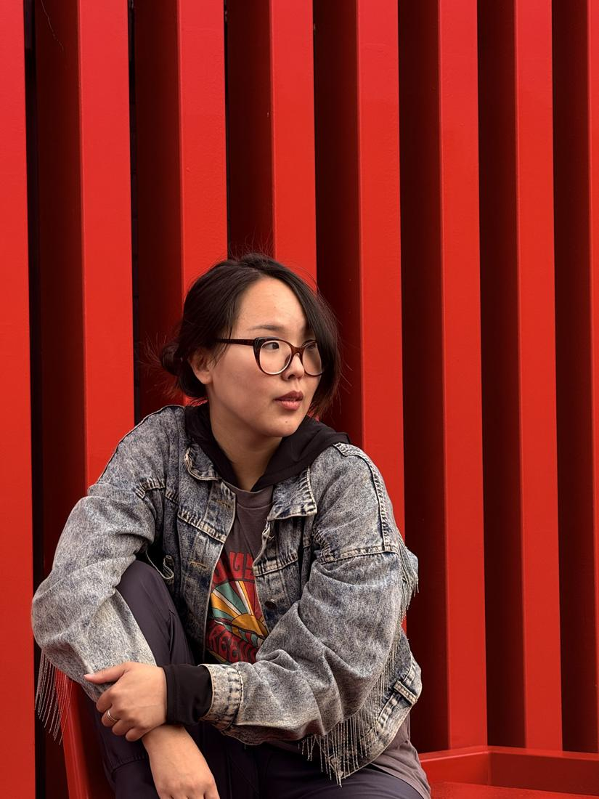
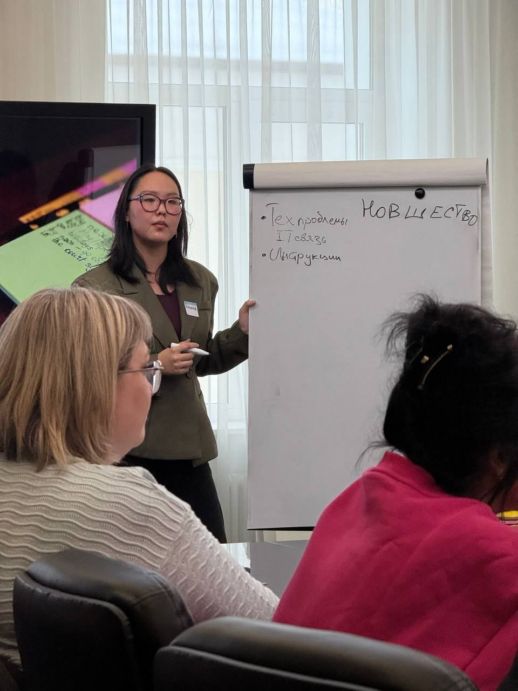
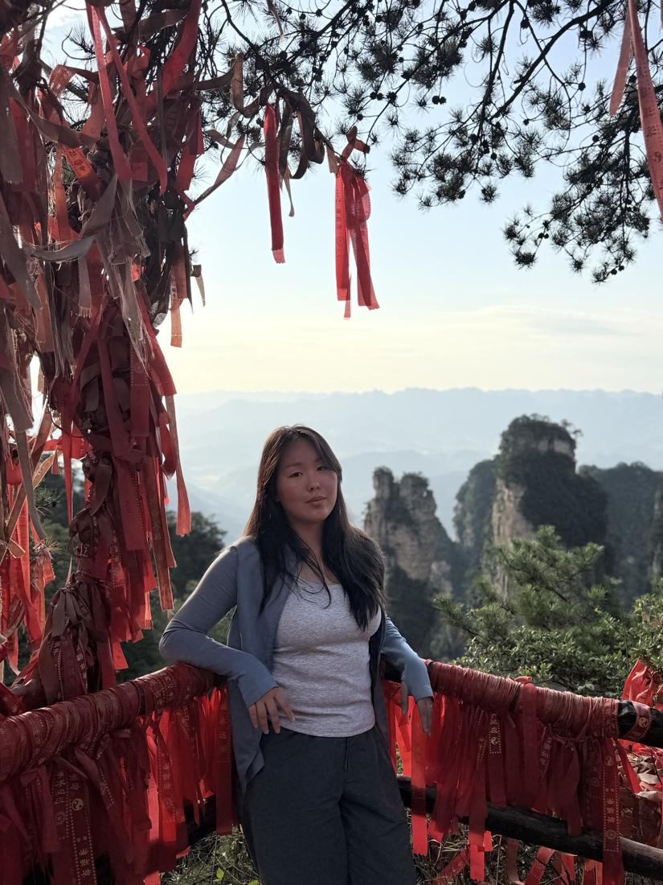

С чем приходят
- Не понимаю, чего хочуЖелания спутались с «надо» и чужими ожиданиями.
- Знаю, чего хочу, но не начинаюРазберём, что держит, и найдём первый посильный шаг.
- ОтношенияС близкими, партнёром, коллегами и с собой.
- Рутина, которая съедаетДни похожи друг на друга. Вместе смотрим на неё прямо и ищем, где в ней жизнь и силы.
Как я работаю
Я работаю в экзистенциально-гуманистическом подходе. В центре внимания ваша жизнь как она есть: выборы, ценности, свобода и ответственность за свой путь.
Я не ставлю диагнозов и не даю готовых рецептов. Моя задача — помочь вам лучше чувствовать свою жизнь и опираться на то, что для вас действительно важно.
Работаю онлайн. Сессия длится 55 минут.
Обо мне
Я училась психологии в Герцена, в стенах которого зарождались отечественная психология и педагогика. Первую настоящую практику прошла на горячей линии фонда «Просто люди». Порой были сложные истории, но именно там я поняла: передо мной просто люди.
С 2024 года работаю в бизнесе: разрабатываю тренинги, провожу обучение, нередко помогаю коллегам найти ресурс в трудный период. И, конечно, продолжаю вести клиентов индивидуально.
- 2023Профориентация школьников 9–11 классов
- 2023–2024Стажировка в благотворительном фонде «Просто люди»: психолог-консультант горячей линии помощи людям с ментальными трудностями
- 2024РГПУ им. А. И. Герцена, бакалавриат «Психология»
- 2024Проект «Пазл»: работа с детьми из детских домов
- 2025Обучение в коррекционном центре «Дара»: работа с детьми с аутизмом
- 2024–2026Обучение и развитие сотрудников в компаниях
- 2026Институт практической психологии «Иматон», курс по методу ассессмент-центра
- 8 выпусковПодкаст «Человечки» о психологии: Яндекс Музыка, Spotify, VK

Что говорят клиенты
Легко довериться
«Полина бережно относится к своей работе. Сразу видно, что она изучает дополнительные материалы и готовится к нашим встречам. Мне было легко доверить ей свои переживания. Небольшие задания реально помогают мне отодвигать тревогу, хоть действия и несложные»
Осознание за осознанием
«Шла до дома, и у меня осознание на осознании. Я всё записала. Насколько, оказывается, глубокая тема!»
Новый взгляд на жизнь
«После наших консультаций и упражнений я отправилась в путешествие и вообще по-другому начала смотреть на свою жизнь»

Для компаний
Разрабатываю и провожу тренинги: коммуникация в команде, обратная связь, адаптация новых сотрудников, продажи. Опираюсь на психологию, поэтому обучение работает с людьми, а не только со скриптами.
Чтобы обсудить обучение для вашей команды, напишите мне в Telegram и коротко опишите задачу.
Формат и стоимость
Консультация
4 000 ₽
55 минут, онлайн
Сейчас открыта запись
Первая встреча — сразу полноценная сессия. Мы знакомимся, и вы уходите с первыми результатами.
Время закрепляется предоплатой 50%. Перенести или отменить встречу можно не позднее чем за сутки, при более поздней отмене предоплата не возвращается.
Гобелен пути
Моё бесплатное приложение: мягкий планер жизни в виде путешествия. Цели, привычки, деньги и настроение без упрёков за пропуски. Все записи хранятся только на вашем телефоне.

Записаться
Напишите мне в Telegram: коротко, с чем хотите прийти и когда вам удобно. Я отвечу в течение суток и предложу время.
Написать в TelegramМой Telegram: @linapsyc
Консультации не являются экстренной помощью.